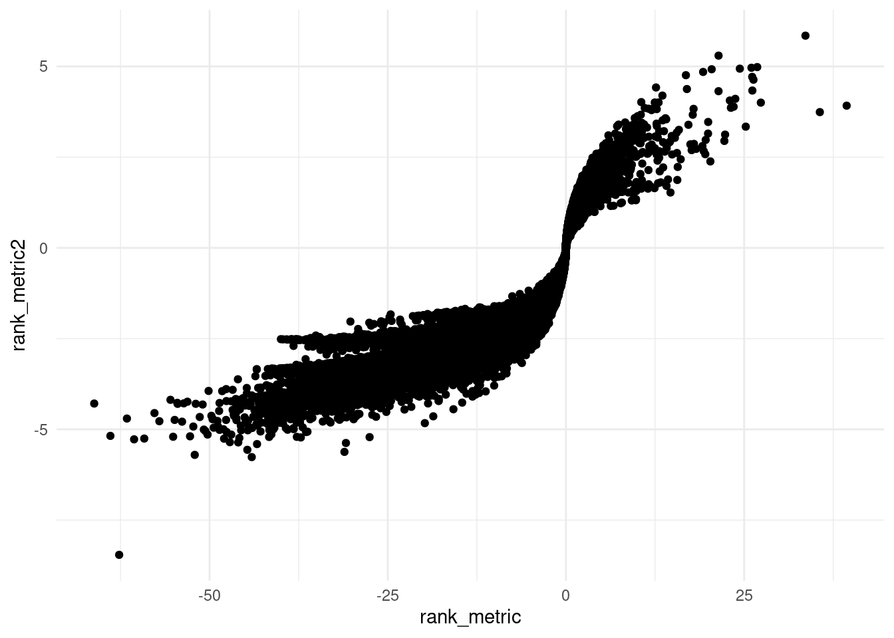
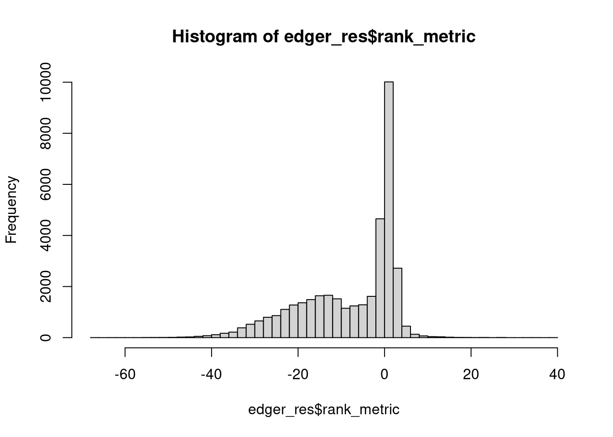
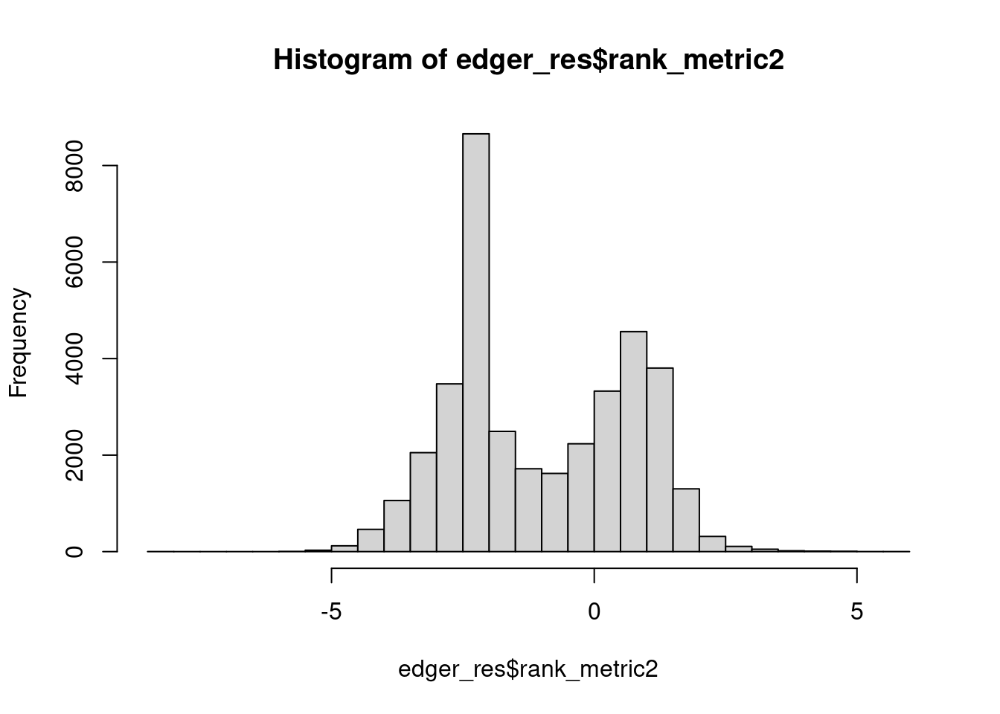
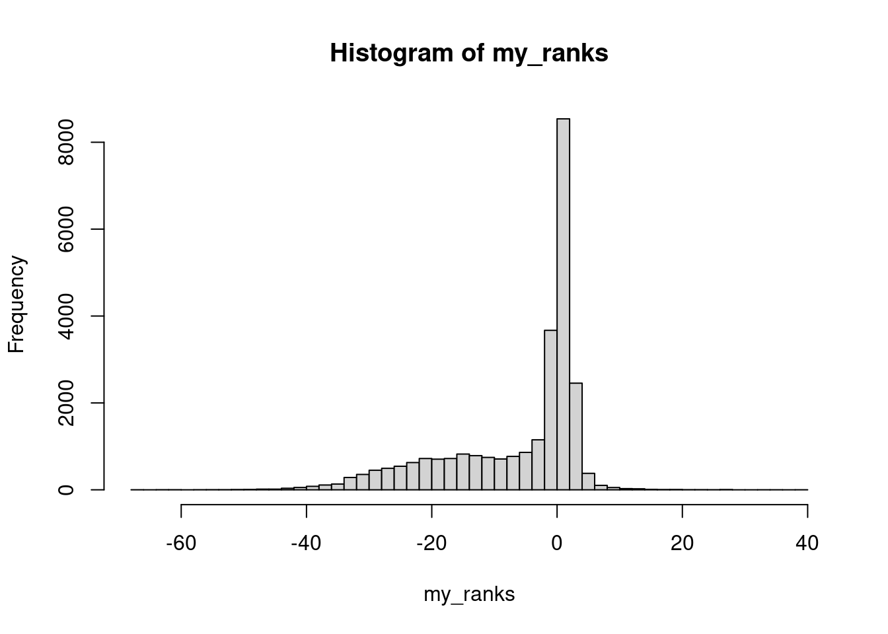
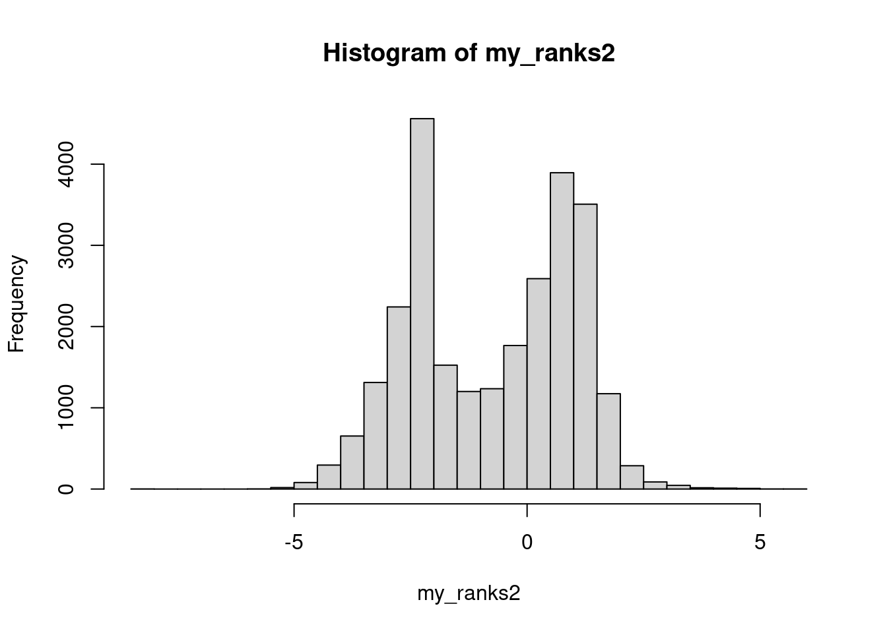
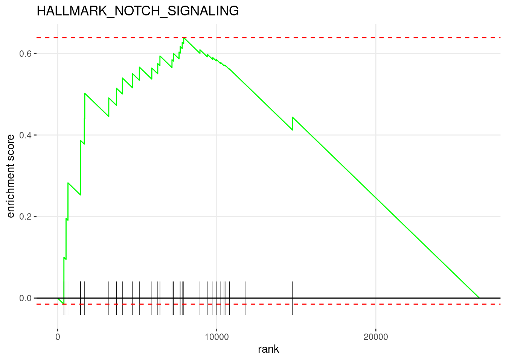

Last updated: 2025-04-16
Checks: 7 0
Knit directory: muse/
This reproducible R Markdown analysis was created with workflowr (version 1.7.1). The Checks tab describes the reproducibility checks that were applied when the results were created. The Past versions tab lists the development history.
Great! Since the R Markdown file has been committed to the Git repository, you know the exact version of the code that produced these results.
Great job! The global environment was empty. Objects defined in the global environment can affect the analysis in your R Markdown file in unknown ways. For reproduciblity it’s best to always run the code in an empty environment.
The command set.seed(20200712) was run prior to running
the code in the R Markdown file. Setting a seed ensures that any results
that rely on randomness, e.g. subsampling or permutations, are
reproducible.
Great job! Recording the operating system, R version, and package versions is critical for reproducibility.
Nice! There were no cached chunks for this analysis, so you can be confident that you successfully produced the results during this run.
Great job! Using relative paths to the files within your workflowr project makes it easier to run your code on other machines.
Great! You are using Git for version control. Tracking code development and connecting the code version to the results is critical for reproducibility.
The results in this page were generated with repository version 5624043. See the Past versions tab to see a history of the changes made to the R Markdown and HTML files.
Note that you need to be careful to ensure that all relevant files for
the analysis have been committed to Git prior to generating the results
(you can use wflow_publish or
wflow_git_commit). workflowr only checks the R Markdown
file, but you know if there are other scripts or data files that it
depends on. Below is the status of the Git repository when the results
were generated:
Ignored files:
Ignored: .Rproj.user/
Ignored: data/1M_neurons_filtered_gene_bc_matrices_h5.h5
Ignored: data/293t/
Ignored: data/293t_3t3_filtered_gene_bc_matrices.tar.gz
Ignored: data/293t_filtered_gene_bc_matrices.tar.gz
Ignored: data/5k_Human_Donor1_PBMC_3p_gem-x_5k_Human_Donor1_PBMC_3p_gem-x_count_sample_filtered_feature_bc_matrix.h5
Ignored: data/5k_Human_Donor2_PBMC_3p_gem-x_5k_Human_Donor2_PBMC_3p_gem-x_count_sample_filtered_feature_bc_matrix.h5
Ignored: data/5k_Human_Donor3_PBMC_3p_gem-x_5k_Human_Donor3_PBMC_3p_gem-x_count_sample_filtered_feature_bc_matrix.h5
Ignored: data/5k_Human_Donor4_PBMC_3p_gem-x_5k_Human_Donor4_PBMC_3p_gem-x_count_sample_filtered_feature_bc_matrix.h5
Ignored: data/97516b79-8d08-46a6-b329-5d0a25b0be98.h5ad
Ignored: data/Parent_SC3v3_Human_Glioblastoma_filtered_feature_bc_matrix.tar.gz
Ignored: data/brain_counts/
Ignored: data/cl.obo
Ignored: data/cl.owl
Ignored: data/jurkat/
Ignored: data/jurkat:293t_50:50_filtered_gene_bc_matrices.tar.gz
Ignored: data/jurkat_293t/
Ignored: data/jurkat_filtered_gene_bc_matrices.tar.gz
Ignored: data/pbmc20k/
Ignored: data/pbmc20k_seurat/
Ignored: data/pbmc3k/
Ignored: data/pbmc3k_bpcells_mat/
Ignored: data/pbmc3k_seurat.rds
Ignored: data/pbmc4k_filtered_gene_bc_matrices.tar.gz
Ignored: data/pbmc_1k_v3_filtered_feature_bc_matrix.h5
Ignored: data/pbmc_1k_v3_raw_feature_bc_matrix.h5
Ignored: data/refdata-gex-GRCh38-2020-A.tar.gz
Ignored: data/seurat_1m_neuron.rds
Ignored: data/t_3k_filtered_gene_bc_matrices.tar.gz
Ignored: r_packages_4.4.1/
Untracked files:
Untracked: analysis/bioc_scrnaseq.Rmd
Untracked: bpcells_matrix/
Untracked: pbmc3k_before_filtering.rds
Untracked: pbmc3k_save_rds.rds
Untracked: rsem.merged.gene_counts.tsv
Note that any generated files, e.g. HTML, png, CSS, etc., are not included in this status report because it is ok for generated content to have uncommitted changes.
These are the previous versions of the repository in which changes were
made to the R Markdown (analysis/fgsea_edger.Rmd) and HTML
(docs/fgsea_edger.html) files. If you’ve configured a
remote Git repository (see ?wflow_git_remote), click on the
hyperlinks in the table below to view the files as they were in that
past version.
| File | Version | Author | Date | Message |
|---|---|---|---|---|
| Rmd | 5624043 | Dave Tang | 2025-04-16 | Further reading |
| html | 9f42e61 | Dave Tang | 2025-04-16 | Build site. |
| Rmd | a5a8c6f | Dave Tang | 2025-04-16 | Compare rank metrics |
| html | 49a8145 | Dave Tang | 2025-01-24 | Build site. |
| Rmd | eef0287 | Dave Tang | 2025-01-24 | Using fgsea with edgeR results |
First install fgsea.
if (!require("BiocManager", quietly = TRUE))
install.packages("BiocManager")
if (!require("fgsea", quietly = TRUE))
BiocManager::install("fgsea")
library(fgsea)An example differential gene expression results table.
edger_res <- readr::read_csv("https://raw.githubusercontent.com/davetang/muse/refs/heads/main/data/13970886_edger_res.csv", show_col_types = FALSE)
head(edger_res)# A tibble: 6 × 6
ensembl_gene_id logFC logCPM F PValue adjusted_pvalue
<chr> <dbl> <dbl> <dbl> <dbl> <dbl>
1 ENSG00000000003 2.73 4.83 4.28 0.0684 0.109
2 ENSG00000000005 -7.00 0.541 17.6 0.00216 0.0138
3 ENSG00000000419 0.120 5.34 0.114 0.743 0.776
4 ENSG00000000457 -0.708 5.31 3.35 0.0993 0.145
5 ENSG00000000460 -0.897 3.95 2.66 0.136 0.186
6 ENSG00000000938 1.54 5.60 1.86 0.205 0.258 Add ranking metrics.
edger_res |>
dplyr::mutate(rank_metric = logFC * -log10(PValue)) |>
dplyr::mutate(rank_metric2 = sign(logFC) * -log10(PValue)) -> edger_resCompare rankings.
library(ggplot2)
ggplot(edger_res, aes(rank_metric, rank_metric2)) +
geom_point() +
theme_minimal()
| Version | Author | Date |
|---|---|---|
| 9f42e61 | Dave Tang | 2025-04-16 |
Correlation of rank metrics.
cor(edger_res$rank_metric, edger_res$rank_metric2, method = "spearman")[1] 0.9586936Use {org.Hs.eg.db}.
if (!require("org.Hs.eg.db", quietly = TRUE))
BiocManager::install("org.Hs.eg.db")
Attaching package: 'BiocGenerics'The following objects are masked from 'package:stats':
IQR, mad, sd, var, xtabsThe following objects are masked from 'package:base':
anyDuplicated, aperm, append, as.data.frame, basename, cbind,
colnames, dirname, do.call, duplicated, eval, evalq, Filter, Find,
get, grep, grepl, intersect, is.unsorted, lapply, Map, mapply,
match, mget, order, paste, pmax, pmax.int, pmin, pmin.int,
Position, rank, rbind, Reduce, rownames, sapply, saveRDS, setdiff,
table, tapply, union, unique, unsplit, which.max, which.minWelcome to Bioconductor
Vignettes contain introductory material; view with
'browseVignettes()'. To cite Bioconductor, see
'citation("Biobase")', and for packages 'citation("pkgname")'.
Attaching package: 'S4Vectors'The following object is masked from 'package:utils':
findMatchesThe following objects are masked from 'package:base':
expand.grid, I, unnamesuppressPackageStartupMessages(library(org.Hs.eg.db))Convert to Entrez Gene IDs.
AnnotationDbi::select(
org.Hs.eg.db,
keys = edger_res$ensembl_gene_id,
columns=c("ENSEMBL","ENTREZID"),
keytype="ENSEMBL"
) -> ensembl_to_entrez'select()' returned 1:many mapping between keys and columnsensembl_to_entrez <- dplyr::rename(ensembl_to_entrez, "ensembl_gene_id" = ENSEMBL)
head(ensembl_to_entrez) ensembl_gene_id ENTREZID
1 ENSG00000000003 7105
2 ENSG00000000005 64102
3 ENSG00000000419 8813
4 ENSG00000000457 57147
5 ENSG00000000460 55732
6 ENSG00000000938 2268Number of NAs.
table(is.na(ensembl_to_entrez$ENTREZID))
FALSE TRUE
28722 10968 Use {msigdb}.
if (!require("msigdb", quietly = TRUE))
BiocManager::install("msigdb")
if (!require("ExperimentHub", quietly = TRUE))
BiocManager::install("ExperimentHub")
Attaching package: 'AnnotationHub'The following object is masked from 'package:Biobase':
cacheif (!require("GSEABase", quietly = TRUE))
BiocManager::install("GSEABase")
Attaching package: 'graph'The following object is masked from 'package:XML':
addNodesuppressPackageStartupMessages(library(msigdb))
suppressPackageStartupMessages(library(ExperimentHub))
suppressPackageStartupMessages(library(GSEABase))Query an ExperimentHub object.
eh <- ExperimentHub(ask = FALSE)
AnnotationHub::query(x = eh, pattern = 'msigdb')ExperimentHub with 49 records
# snapshotDate(): 2024-10-24
# $dataprovider: Broad Institute, Emory University, EBI
# $species: Homo sapiens, Mus musculus
# $rdataclass: GSEABase::GeneSetCollection, list, data.frame
# additional mcols(): taxonomyid, genome, description,
# coordinate_1_based, maintainer, rdatadateadded, preparerclass, tags,
# rdatapath, sourceurl, sourcetype
# retrieve records with, e.g., 'object[["EH5421"]]'
title
EH5421 | msigdb.v7.2.hs.SYM
EH5422 | msigdb.v7.2.hs.EZID
EH5423 | msigdb.v7.2.mm.SYM
EH5424 | msigdb.v7.2.mm.EZID
EH6727 | MSigDB C8 MANNO MIDBRAIN
... ...
EH8296 | msigdb.v7.5.1.hs.SYM
EH8297 | msigdb.v7.5.1.mm.EZID
EH8298 | msigdb.v7.5.1.mm.idf
EH8299 | msigdb.v7.5.1.mm.SYM
EH8300 | imex_hsmm_0722 Latest version.
AnnotationHub::query(x = eh, pattern = 'msigdb.*hs.EZID') |>
tail(1) -> msigdb_hs_latest
msigdb_hs_latestExperimentHub with 1 record
# snapshotDate(): 2024-10-24
# names(): EH8294
# package(): msigdb
# $dataprovider: Broad Institute
# $species: Homo sapiens
# $rdataclass: GSEABase::GeneSetCollection
# $rdatadateadded: 2023-07-03
# $title: msigdb.v7.5.1.hs.EZID
# $description: Gene expression signatures (Homo sapiens) from the Molecular...
# $taxonomyid: 9606
# $genome: NA
# $sourcetype: XML
# $sourceurl: https://data.broadinstitute.org/gsea-msigdb/msigdb/release/7.5...
# $sourcesize: NA
# $tags: c("Homo_sapiens_Data", "Mus_musculus_Data")
# retrieve record with 'object[["EH8294"]]' Download.
msigdb_hs_ezid <- eh[[names(msigdb_hs_latest)]]see ?msigdb and browseVignettes('msigdb') for documentationloading from cacheCollections.
table(sapply(lapply(msigdb_hs_ezid, collectionType), bcCategory))
c1 c2 c3 c4 c5 c6 c7 c8 h
299 6180 3726 858 28005 189 5219 700 50 Create gene lists from the Hallmark collection.
wanted <- sapply(lapply(msigdb_hs_ezid, collectionType), bcCategory) == "h"
hallmark_gs <- msigdb_hs_ezid[wanted]
hallmark_gs_list <- lapply(hallmark_gs, geneIds)
class(hallmark_gs_list)[1] "list"names(hallmark_gs_list) <- names(hallmark_gs)
head(hallmark_gs_list)$HALLMARK_TNFA_SIGNALING_VIA_NFKB
[1] "3726" "2920" "467" "4792" "7128" "5743" "2919" "8870"
[9] "9308" "6364" "2921" "23764" "4791" "7127" "1839" "1316"
[17] "330" "5329" "7538" "3383" "3725" "1960" "3553" "597"
[25] "23645" "80149" "6648" "4929" "3552" "5971" "7185" "7832"
[33] "1843" "1326" "2114" "2152" "6385" "1958" "3569" "7124"
[41] "23135" "4790" "3976" "5806" "8061" "3164" "182" "6351"
[49] "2643" "6347" "1827" "1844" "10938" "9592" "5966" "8837"
[57] "8767" "4794" "8013" "22822" "51278" "8744" "2669" "1647"
[65] "3627" "10769" "8553" "1959" "9021" "11182" "5734" "1847"
[73] "5055" "4783" "5054" "10221" "25976" "5970" "329" "6372"
[81] "9516" "7130" "960" "3624" "5328" "4609" "3604" "6446"
[89] "10318" "10135" "2355" "10957" "3398" "969" "3575" "1942"
[97] "7262" "5209" "6352" "79693" "3460" "8878" "10950" "4616"
[105] "8942" "50486" "694" "4170" "7422" "5606" "1026" "3491"
[113] "10010" "3433" "3606" "7280" "3659" "2353" "4973" "388"
[121] "374" "4814" "65986" "8613" "9314" "6373" "6303" "1435"
[129] "1880" "56937" "5791" "7097" "57007" "7071" "4082" "3914"
[137] "1051" "9322" "2150" "687" "3949" "7050" "127544" "55332"
[145] "2683" "11080" "1437" "5142" "8303" "5341" "6776" "23258"
[153] "595" "23586" "8877" "941" "25816" "57018" "2526" "9034"
[161] "80176" "8848" "9334" "150094" "23529" "4780" "2354" "5187"
[169] "10725" "490" "3593" "3572" "9120" "19" "3280" "604"
[177] "8660" "6515" "1052" "51561" "4088" "6890" "9242" "64135"
[185] "3601" "79155" "602" "24145" "24147" "1906" "10209" "650"
[193] "1846" "10611" "23308" "9945" "10365" "3371" "5271" "4084"
$HALLMARK_HYPOXIA
[1] "5230" "5163" "2632" "5211" "226" "2026" "5236" "10397"
[9] "3099" "230" "2821" "4601" "6513" "5033" "133" "8974"
[17] "2023" "5214" "205" "26355" "5209" "7422" "665" "7167"
[25] "30001" "55818" "901" "3939" "2997" "2597" "8553" "51129"
[33] "3725" "5054" "4015" "2645" "8497" "23764" "54541" "6515"
[41] "3486" "4783" "2353" "3516" "3098" "10370" "3669" "2584"
[49] "26118" "5837" "6781" "23036" "694" "123" "1466" "7436"
[57] "23210" "2131" "2152" "5165" "55139" "7360" "229" "8614"
[65] "54206" "2027" "10957" "3162" "5228" "26330" "9435" "55076"
[73] "63827" "467" "857" "272" "2719" "3340" "8660" "8819"
[81] "2548" "6385" "8987" "8870" "5313" "3484" "5329" "112464"
[89] "8839" "9215" "25819" "6275" "58528" "7538" "1956" "1907"
[97] "3423" "1026" "6095" "1843" "4282" "5507" "10570" "11015"
[105] "1837" "136" "9957" "284119" "2908" "1316" "2239" "3491"
[113] "7128" "771" "3073" "633" "23645" "55276" "5292" "25824"
[121] "55577" "1027" "680" "8277" "4493" "538" "4502" "9672"
[129] "25976" "5317" "302" "5224" "1649" "5578" "2542" "7852"
[137] "1944" "1356" "8609" "1490" "9469" "7163" "56925" "124872"
[145] "10891" "596" "2651" "3036" "54800" "949" "6576" "6383"
[153] "839" "7428" "2309" "5155" "126792" "6518" "8406" "1942"
[161] "2745" "57007" "5066" "7045" "1634" "6478" "51316" "2203"
[169] "8459" "5260" "4627" "1028" "9380" "5105" "3623" "3309"
[177] "8509" "23327" "7162" "7511" "3569" "6533" "4214" "3948"
[185] "9590" "26136" "3798" "3906" "1289" "2817" "3069" "10994"
[193] "1463" "7052" "2113" "3219" "8991" "2355" "6820" "7043"
$HALLMARK_CHOLESTEROL_HOMEOSTASIS
[1] "2224" "1595" "3422" "2222" "1717" "6713" "3157" "50814"
[9] "4047" "4597" "3949" "7108" "230" "10682" "6319" "10654"
[17] "4598" "4023" "6309" "9415" "3156" "51478" "312" "6721"
[25] "5833" "55902" "467" "127" "23474" "1891" "875" "2990"
[33] "2194" "3958" "22809" "308" "94241" "1119" "2946" "39"
[41] "552" "5359" "1191" "54206" "57761" "58191" "51330" "71"
[49] "182" "5641" "26270" "493869" "10957" "118429" "114569" "928"
[57] "5468" "2731" "6811" "134429" "1499" "27346" "116496" "5165"
[65] "5329" "7869" "2770" "20" "6311" "4783" "214" "2171"
[73] "6282" "132864"
$HALLMARK_MITOTIC_SPINDLE
[1] "9181" "23332" "3832" "9493" "57679" "382" "4650" "4627"
[9] "10426" "9793" "29127" "57580" "50650" "4926" "6711" "11004"
[17] "3799" "7272" "324" "11190" "5048" "10435" "9371" "55704"
[25] "56992" "332" "116840" "4763" "7248" "996" "11064" "114791"
[33] "24137" "22919" "55785" "675" "5347" "5921" "4751" "8936"
[41] "7153" "7204" "9826" "10300" "9055" "54443" "55755" "9126"
[49] "10844" "9700" "55201" "201176" "9732" "29901" "3619" "394"
[57] "2934" "10276" "10128" "23637" "2317" "64411" "121512" "29"
[65] "55835" "4690" "1063" "9585" "10163" "4628" "1062" "9266"
[73] "4281" "3831" "57787" "127829" "9702" "8409" "393" "23580"
[81] "163786" "9113" "4983" "8976" "4296" "6654" "25" "7074"
[89] "23095" "6453" "134549" "8440" "9787" "613" "10048" "2037"
[97] "10801" "11104" "51174" "22974" "3797" "357" "85378" "6709"
[105] "23022" "23647" "9735" "84376" "25777" "58526" "1739" "2316"
[113] "79658" "8476" "23365" "4082" "51199" "5108" "10928" "7430"
[121] "85464" "983" "22930" "10160" "11346" "54509" "1894" "2035"
[129] "51735" "3835" "84333" "6780" "396" "6790" "26271" "51203"
[137] "5829" "9564" "23607" "11214" "10013" "22994" "3996" "23192"
[145] "5116" "7840" "11133" "667" "22920" "151987" "9411" "9462"
[153] "9133" "80119" "5922" "4739" "8243" "81" "5311" "7461"
[161] "998" "10403" "9874" "9344" "6904" "832" "1794" "2017"
[169] "10051" "10565" "7277" "4001" "10006" "6093" "55125" "699"
[177] "50628" "64857" "253260" "10018" "1778" "6624" "8874" "140735"
[185] "4643" "274" "4853" "5981" "10611" "89941" "8470" "11135"
[193] "7414" "6249" "23012" "7531" "9771" "55722" "1453"
$HALLMARK_WNT_BETA_CATENIN_SIGNALING
[1] "4609" "1499" "3714" "4851" "28514" "8313" "5664" "8321" "4855"
[10] "51176" "8312" "85407" "81029" "8454" "182" "9794" "2648" "2770"
[19] "7475" "5727" "9612" "27121" "3066" "22943" "6932" "7471" "8650"
[28] "6868" "1856" "5467" "23385" "10014" "894" "10023" "1454" "3516"
[37] "8325" "7157" "6502" "23493" "23462" "79885"
$HALLMARK_TGF_BETA_SIGNALING
[1] "7046" "4092" "7040" "64750" "57154" "659" "6498" "6497" "90"
[10] "56937" "9612" "5054" "3726" "4086" "4091" "23645" "7050" "5045"
[19] "4088" "2280" "6885" "657" "1499" "28996" "7071" "650" "2022"
[28] "324" "5494" "331" "999" "3397" "7044" "1028" "51592" "11031"
[37] "7082" "6574" "1025" "3399" "9241" "51742" "3460" "3398" "5499"
[46] "6711" "25937" "8412" "7057" "2339" "3065" "7323" "4053" "387" Rank metrics distribution.
plot(hist(edger_res$rank_metric, breaks = 50))
| Version | Author | Date |
|---|---|---|
| 49a8145 | Dave Tang | 2025-01-24 |
plot(hist(edger_res$rank_metric2, breaks = 50))
| Version | Author | Date |
|---|---|---|
| 9f42e61 | Dave Tang | 2025-04-16 |
Create ranks vector.
edger_res |>
dplyr::inner_join(y = ensembl_to_entrez, by = "ensembl_gene_id", relationship = "many-to-many") |>
dplyr::filter(!is.na(ENTREZID)) |>
dplyr::group_by(ENTREZID) |>
dplyr::mutate(ambiguous = ifelse(dplyr::n()>1, TRUE, FALSE)) |>
dplyr::filter(!ambiguous) -> res
my_ranks <- res$rank_metric
my_names <- as.character(res$ENTREZID)
names(my_ranks) <- my_names
my_ranks2 <- res$rank_metric2
names(my_ranks2) <- my_names
plot(hist(my_ranks, breaks = 50))
| Version | Author | Date |
|---|---|---|
| 49a8145 | Dave Tang | 2025-01-24 |
plot(hist(my_ranks2, breaks = 50))
| Version | Author | Date |
|---|---|---|
| 9f42e61 | Dave Tang | 2025-04-16 |
The fgsea() function runs the pre-ranked gene set
enrichment analysis.
set.seed(1984)
fgseaRes <- fgsea(
pathways = hallmark_gs_list,
stats = my_ranks,
minSize=15,
maxSize=500,
nPermSimple = 100000
)Warning in preparePathwaysAndStats(pathways, stats, minSize, maxSize, gseaParam, : There are ties in the preranked stats (2.44% of the list).
The order of those tied genes will be arbitrary, which may produce unexpected results.Warning in fgseaMultilevel(pathways = pathways, stats = stats, minSize =
minSize, : There were 37 pathways for which P-values were not calculated
properly due to unbalanced (positive and negative) gene-level statistic values.
For such pathways pval, padj, NES, log2err are set to NA. You can try to
increase the value of the argument nPermSimple (for example set it nPermSimple
= 1000000)set.seed(1984)
fgseaRes2 <- fgsea(
pathways = hallmark_gs_list,
stats = my_ranks2,
minSize=15,
maxSize=500,
nPermSimple = 100000
)Warning in preparePathwaysAndStats(pathways, stats, minSize, maxSize, gseaParam, : There are ties in the preranked stats (2.44% of the list).
The order of those tied genes will be arbitrary, which may produce unexpected results.Warning in fgseaMultilevel(pathways = pathways, stats = stats, minSize =
minSize, : There were 24 pathways for which P-values were not calculated
properly due to unbalanced (positive and negative) gene-level statistic values.
For such pathways pval, padj, NES, log2err are set to NA. You can try to
increase the value of the argument nPermSimple (for example set it nPermSimple
= 1000000)Top 10 enriched pathways.
head(fgseaRes[order(pval), ], 10) pathway pval padj log2err
<char> <num> <num> <num>
1: HALLMARK_NOTCH_SIGNALING 3.596565e-05 0.0004675534 0.5573322388
2: HALLMARK_ANGIOGENESIS 9.649323e-04 0.0062720600 0.4772708154
3: HALLMARK_SPERMATOGENESIS 3.342167e-01 1.0000000000 0.0064391585
4: HALLMARK_PANCREAS_BETA_CELLS 4.715489e-01 1.0000000000 0.0048298692
5: HALLMARK_KRAS_SIGNALING_DN 8.689013e-01 1.0000000000 0.0017721017
6: HALLMARK_APICAL_SURFACE 9.996100e-01 1.0000000000 0.0000935165
7: HALLMARK_HEDGEHOG_SIGNALING 9.997800e-01 1.0000000000 0.0000901134
8: HALLMARK_BILE_ACID_METABOLISM 1.000000e+00 1.0000000000 0.0000000000
9: HALLMARK_COAGULATION 1.000000e+00 1.0000000000 0.0000000000
10: HALLMARK_FATTY_ACID_METABOLISM 1.000000e+00 1.0000000000 0.0000000000
ES NES size leadingEdge
<num> <num> <int> <list>
1: 0.6388199 2.3898036 31 2648, 11....
2: 0.4445579 1.7356069 35 6696, 70....
3: -0.5487978 -1.0258898 135 56903, 8....
4: -0.5614137 -1.0146693 40 5080, 47....
5: -0.5031756 -0.9463433 194 56154, 2....
6: -0.2987335 -0.5417834 44 116085, ....
7: -0.2533869 -0.4560201 36 5340, 78....
8: -0.3366708 -0.6269499 112 1581, 32....
9: -0.2742501 -0.5128142 137 4153, 32....
10: -0.2290126 -0.4293097 158 2572, 76....head(fgseaRes2[order(pval), ], 10) pathway pval padj log2err
<char> <num> <num> <num>
1: HALLMARK_UNFOLDED_PROTEIN_RESPONSE 2.519434e-32 6.550528e-31 1.4745625
2: HALLMARK_DNA_REPAIR 2.521495e-29 3.277944e-28 1.4099514
3: HALLMARK_PROTEIN_SECRETION 6.387479e-23 5.535815e-22 1.2378967
4: HALLMARK_APOPTOSIS 1.611617e-22 1.047551e-21 1.2295041
5: HALLMARK_INTERFERON_ALPHA_RESPONSE 9.927853e-22 5.162483e-21 1.2039752
6: HALLMARK_ANDROGEN_RESPONSE 5.673049e-17 2.458321e-16 1.0574636
7: HALLMARK_MYC_TARGETS_V2 7.470786e-17 2.774863e-16 1.0574636
8: HALLMARK_PI3K_AKT_MTOR_SIGNALING 1.538928e-15 5.001517e-15 1.0175448
9: HALLMARK_FATTY_ACID_METABOLISM 8.155750e-15 2.356105e-14 0.9865463
10: HALLMARK_CHOLESTEROL_HOMEOSTASIS 6.985436e-13 1.816213e-12 0.9214260
ES NES size leadingEdge
<num> <num> <int> <list>
1: 0.6405570 4.335567 113 54541, 5....
2: 0.5411742 3.844693 149 124583, ....
3: 0.5901297 3.886446 95 9871, 10....
4: 0.4474179 3.242312 160 914, 715....
5: 0.5752868 3.810652 97 3627, 85....
6: 0.5001549 3.331186 99 25803, 9....
7: 0.6461827 3.875631 58 3336, 79....
8: 0.4624624 3.106777 105 2810, 51....
9: 0.3573006 2.577347 158 259307, ....
10: 0.4995212 3.124397 74 2990, 56....Plot the most significantly enriched pathway.
plotEnrichment(
hallmark_gs_list[[head(fgseaRes[order(pval), ], 1)$pathway]],
my_ranks
) +
ggplot2::labs(title=head(fgseaRes[order(pval), ], 1)$pathway)
| Version | Author | Date |
|---|---|---|
| 49a8145 | Dave Tang | 2025-01-24 |
No consensus on the best way to rank.
sessionInfo()R version 4.4.1 (2024-06-14)
Platform: x86_64-pc-linux-gnu
Running under: Ubuntu 22.04.5 LTS
Matrix products: default
BLAS: /usr/lib/x86_64-linux-gnu/openblas-pthread/libblas.so.3
LAPACK: /usr/lib/x86_64-linux-gnu/openblas-pthread/libopenblasp-r0.3.20.so; LAPACK version 3.10.0
locale:
[1] LC_CTYPE=en_US.UTF-8 LC_NUMERIC=C
[3] LC_TIME=en_US.UTF-8 LC_COLLATE=en_US.UTF-8
[5] LC_MONETARY=en_US.UTF-8 LC_MESSAGES=en_US.UTF-8
[7] LC_PAPER=en_US.UTF-8 LC_NAME=C
[9] LC_ADDRESS=C LC_TELEPHONE=C
[11] LC_MEASUREMENT=en_US.UTF-8 LC_IDENTIFICATION=C
time zone: Etc/UTC
tzcode source: system (glibc)
attached base packages:
[1] stats4 stats graphics grDevices utils datasets methods
[8] base
other attached packages:
[1] GSEABase_1.68.0 graph_1.84.1 annotate_1.84.0
[4] XML_3.99-0.18 ExperimentHub_2.14.0 AnnotationHub_3.14.0
[7] BiocFileCache_2.14.0 dbplyr_2.5.0 msigdb_1.14.0
[10] org.Hs.eg.db_3.20.0 AnnotationDbi_1.68.0 IRanges_2.40.1
[13] S4Vectors_0.44.0 Biobase_2.66.0 BiocGenerics_0.52.0
[16] ggplot2_3.5.1 fgsea_1.32.4 BiocManager_1.30.25
[19] workflowr_1.7.1
loaded via a namespace (and not attached):
[1] DBI_1.2.3 rlang_1.1.4 magrittr_2.0.3
[4] git2r_0.35.0 compiler_4.4.1 RSQLite_2.3.9
[7] getPass_0.2-4 png_0.1-8 callr_3.7.6
[10] vctrs_0.6.5 stringr_1.5.1 pkgconfig_2.0.3
[13] crayon_1.5.3 fastmap_1.2.0 XVector_0.46.0
[16] labeling_0.4.3 utf8_1.2.4 promises_1.3.2
[19] rmarkdown_2.28 tzdb_0.4.0 UCSC.utils_1.2.0
[22] ps_1.8.1 purrr_1.0.2 bit_4.5.0
[25] xfun_0.48 zlibbioc_1.52.0 cachem_1.1.0
[28] GenomeInfoDb_1.42.3 jsonlite_1.8.9 blob_1.2.4
[31] highr_0.11 later_1.3.2 BiocParallel_1.40.0
[34] parallel_4.4.1 R6_2.5.1 bslib_0.8.0
[37] stringi_1.8.4 jquerylib_0.1.4 Rcpp_1.0.13
[40] knitr_1.48 readr_2.1.5 httpuv_1.6.15
[43] Matrix_1.7-0 tidyselect_1.2.1 rstudioapi_0.17.1
[46] yaml_2.3.10 codetools_0.2-20 curl_6.2.1
[49] processx_3.8.4 lattice_0.22-6 tibble_3.2.1
[52] withr_3.0.2 KEGGREST_1.46.0 evaluate_1.0.1
[55] Biostrings_2.74.1 pillar_1.10.1 filelock_1.0.3
[58] whisker_0.4.1 generics_0.1.3 vroom_1.6.5
[61] rprojroot_2.0.4 BiocVersion_3.20.0 hms_1.1.3
[64] munsell_0.5.1 scales_1.3.0 xtable_1.8-4
[67] glue_1.8.0 tools_4.4.1 data.table_1.16.2
[70] fs_1.6.4 fastmatch_1.1-6 cowplot_1.1.3
[73] grid_4.4.1 colorspace_2.1-1 GenomeInfoDbData_1.2.13
[76] cli_3.6.3 rappdirs_0.3.3 dplyr_1.1.4
[79] gtable_0.3.6 sass_0.4.9 digest_0.6.37
[82] farver_2.1.2 memoise_2.0.1 htmltools_0.5.8.1
[85] lifecycle_1.0.4 httr_1.4.7 mime_0.12
[88] bit64_4.5.2